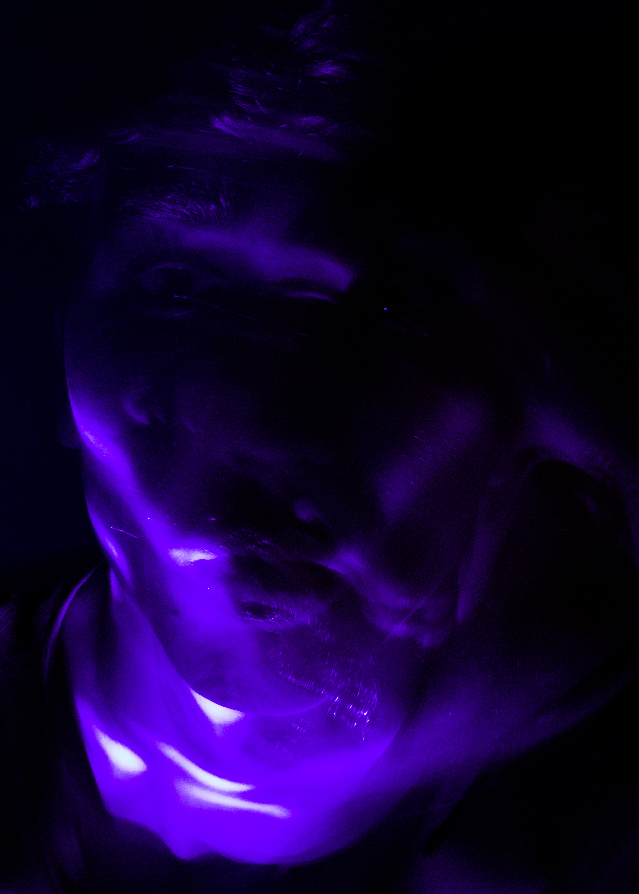
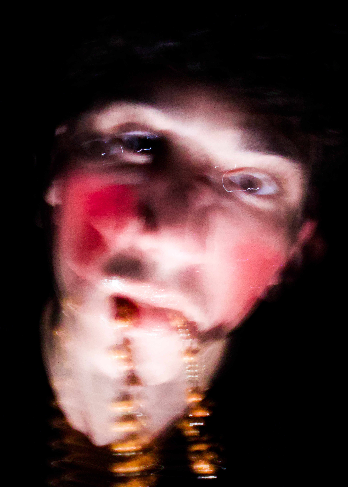
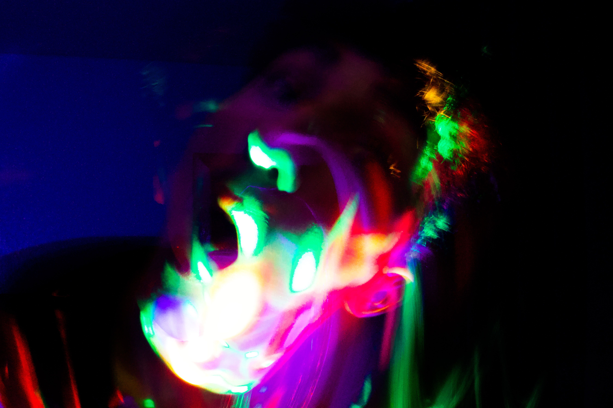
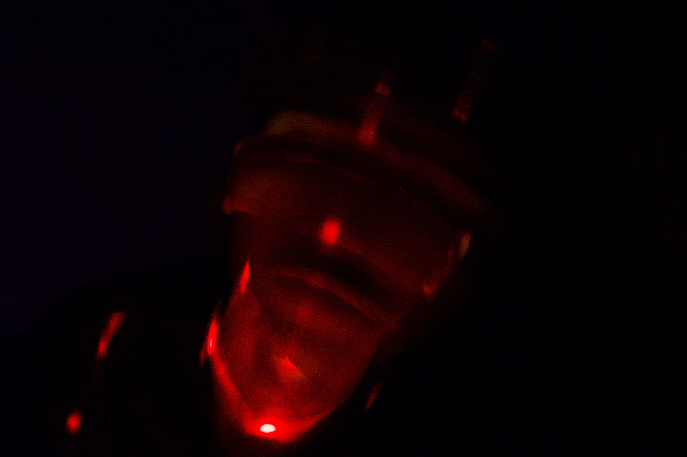
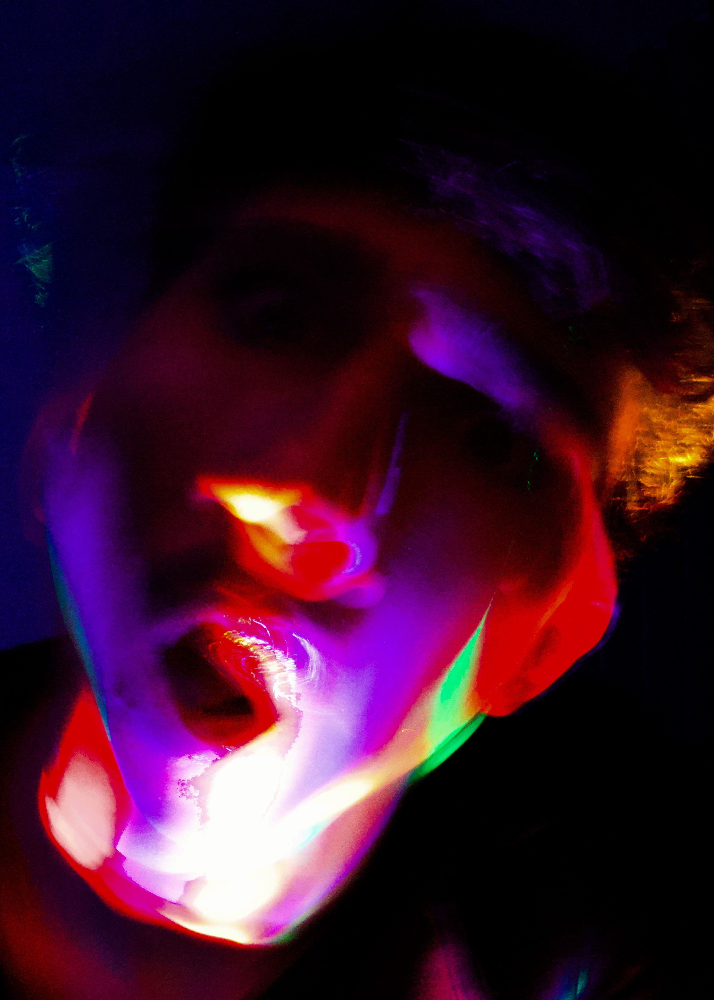
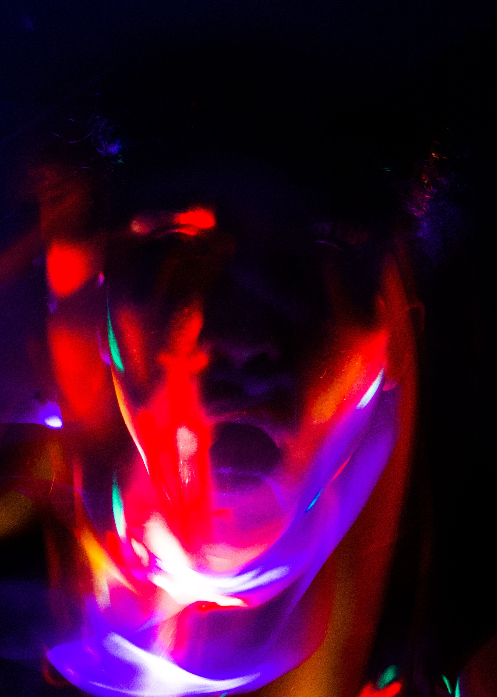

BEM-VINDO AO MUSEU
Coleção de Arte Digital
Explore três séries fotográficas cuidadosamente curadas, cada uma contando sua própria história visual.
Abstração
A fotografia de abstração usa cor, luz e forma para sugerir sensações em vez de representar o real de forma direta

Fusão Cromática

Fusão Cromática

Respiração Azul

Vertigem Vermelha

Silêncio Dourado

Ritmos da Cor

Vertigem Vermelha

Explosão Tropical
Paisagem
A fotografia de paisagem regista espaços exteriores para transmitir a atmosfera e a sensação de estar nesse lugar

Horizontes do Seixoso

Horizontes do Seixoso

Fluxos de Verde

Fluxos de Verde

Horizontes do Seixoso

Perspectivas

Fluxos de Verde

Veia Vermelha
Autorretratos
A fotografia de autorretrato usa o próprio corpo do fotógrafo para explorar identidade e emoções

Expressões Desconstruídas

Efémero

Expressões Desconstruídas

Expressões Desconstruídas
Efémero
O Fumo Que Não Sou

Expressões Desconstruídas

Profundidade Infinita